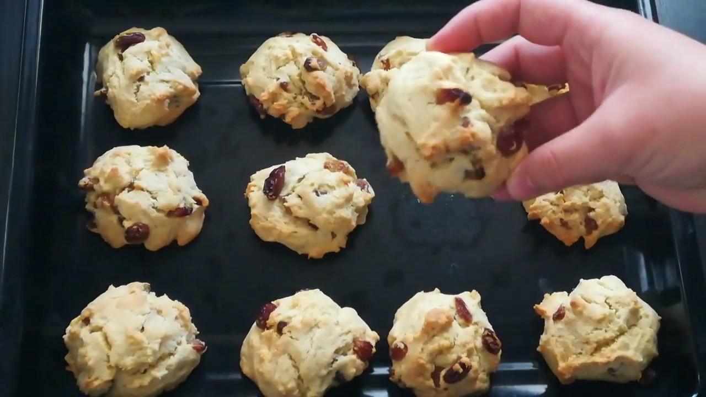
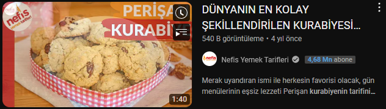

Gereken Malzemeler
10-12 Kişilik • 5 Dk. Hazırlık • 20 Dk. Pişirme
- 2 Adet Yumurta
- 150 Gr. Tereyağı
- 1,5 Su Bardağı Pudra Şekeri
- 1 Su Bardağı Kuru Üzüm
- Yarım Su Bardağı Damla Çikolata
- 1 Su Bardağı Ufalanmış Ceviz
- 1 Paket Vanilya
- 1 Paket Kabartma Tozu
- 3,5 Su Bardağı Kadar Un (Alabildiği Kadar.)
Kaya Kurabiyesi Tarifi
- Margarin, pudra şekeri ve yumurtayı hamur yoğurma kabına alın ve karıştırın.
- Un, kabartma tozu ve vanilyayı katıp yumuşak bir hamur elde edin.
- Üzüm ve damla çikolata katıp çok az yoğurun.
- Cevizden biraz büyük parça koparıp hiç şekil vermeden yağlı kağıt serili fırın tepsisine koyun.
- 175 derecede 20 dk pişirin. Afiyet Olsun
Videolu Anlatım

Kurabiye Hakkında Genel Bilgiler ve Püf Noktalar
- 1 adet kaya kurabiye yaklaşık olarak 384 kaloriye denk gelmektedir.
- Kullandığınız malzemelerin oda ısısında olması gerekmektedir.
- Unu kontrollü bir şekilde yavaş yavaş ilave ederek yumuşak kıvamlı bir hamur elde etmelisiniz.
- Kurabiyenize şekil vermeye çalışmayın, bu sefer dağınık kalsın.
- Kurabiyelerinizi fırında gereğinden fazla durdurmamalısınız. Fırında gereğinden fazla duran kurabiyeleriniz sertleşecektir.
Tarif "Nefis Yemek Tarifleri" adlı youtube kanalına aittir.